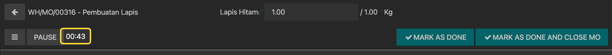
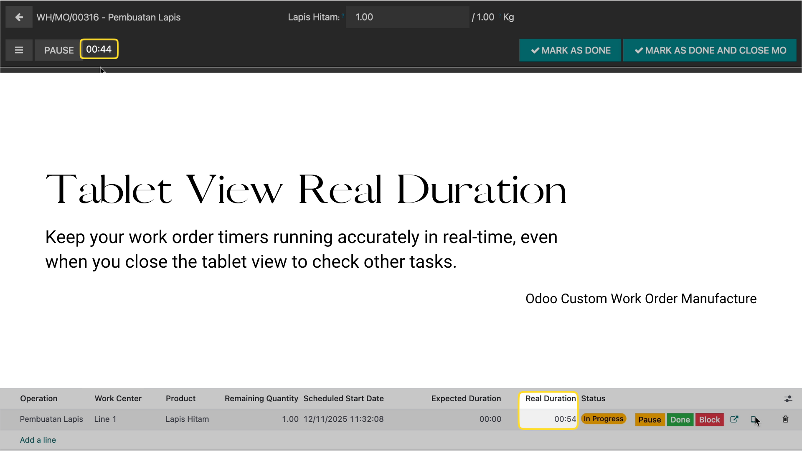
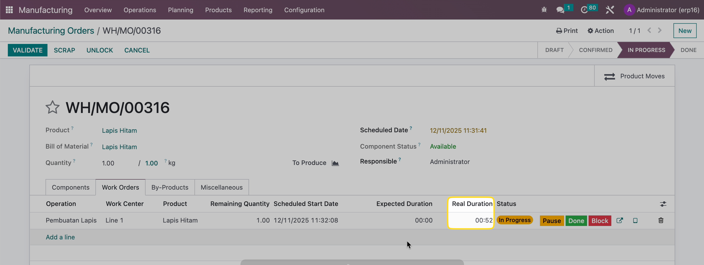

In standard Odoo, when an operator opens tablet view to start a work order, then closes the tablet view to check something else, the timer automatically pauses. This leads to inaccurate time tracking and productivity measurement issues.

This module ensures your production timers keep running accurately in real-time, even when the tablet view is closed. Operators can freely multitask without losing track of work time!

Duration continues to update in real-time even when tablet view is closed
Timer only stops when operator manually clicks Pause or Done button
Works immediately after installation with zero configuration required
Uses computed fields with @api.depends for accurate automatic updates

mrp.workorder - Override _compute_duration()mrp.workcenter.productivity - Real-time timer calculationis_user_working (Boolean) - Track working statusbutton_start() - Set is_user_working = Truebutton_pending() - Manual pause (is_user_working = False)button_finish() - Complete work orderaction_back() - Prevent auto-pause on view close_compute_duration() - Real-time calculation with datetime.now()Get precise production time data for better planning and costing
Operators can multitask freely without worrying about timers
Real production data leads to better performance analysis
1. Install the module from Apps menu
2. No configuration required
3. Start using immediately!
• Manufacturing (mrp)
• Work Order Management (mrp_workorder)
Need help or have questions?
Create an issue on GitHub
Developed by Mellisa FR
Connect on LinkedIn